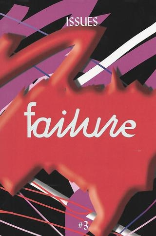

nicole killian
active!
laura coombs
tell me a little bit about yourself?
i grew up in buffalo new york and i studied graphic design in undergrad and i finished school in germany at bauhaus The Staatliches Bauhaus, commonly known as the Bauhaus, was a German art school operational from 1919 to 1933 that combined crafts and the fine arts. thats a while ago now. Basically, after i moved back from germany i worked for a little bit at a alternative newspaper at buffalo new york eventually moved to new york when i got a job at mtv. so i worked at mtv and nickelodeon in my 20’s until i decided to go back to grad school. i ended up going to Cranbrook academy of art and thats where i got my MFA and after that i was a visiting artists at minneapolis college of art and design before i ended up where i am now ive been in richmond now for almost 7 years, so this is where my studio is and ive been kind of back and forth between new york and a bunch of other places.
you collaborate with other artists for books and other publications?
yeah, i was thinking about this a few days ago. i used to love just talking about how collaboration is a about a queer endeavor because its about this idea of a rockstar graphic designer or like this idea of your doing things on your own so, collaboration is really important to me. whether it be in the beginning of a project, the end, or fully through the whole thing
one collaboration in particular called separated, tell me more about that project.
that was actually a project that my colleague shira inbar Shira Inbar is an independent graphic designer with an edge of motion graphics and VJing. She is a founding member of Little Cinema, a series of immersive film screenings at House of Yes, Brooklyn, and has made work for MTV News; attempting to make cable television relevant again for teens via interstitials, gifs, broadcast takeovers, and general randomness. initiated and i was very happy to be included in that project she emailed me and shira also being an immigrant in new york i think the topic of immigration and borders all of those things are really sensitive to her specifically. that was how she initially reached out to me.
have you ever worked on anything politically engaged like this? or was this the first exposure you had to this route?
most of the work i do is politically engaged or one another. thats sort of right now tabled but ive been working on this annual publication with my friend sarah faith gottesdienerah its called issues For issue #3 of Issues, editors Nicole Killian and Sarah Faith Gottesdiener challenged artists and writers to address failure against the backdrop of late/hyper capitalism in the United States.  Issues, No. 3 : Failure you can find it on printed matter website. issues is an annual publication that centers voices of queer folks and people of color, writers, artists, designers, and we sort of initially started it when- kind of a while ago, when we felt like there weren’t a lot of outlets for people outside of Graphic Design, with a capital G and D there were all this people that Nicole and Sarah were really excited about and they thought "why aren’t people talking about them?" and so, that is something that they were really proud of. we havent worked on one in a while but its really exciting when younger designer mention that theyve seen it, because i think that- you know, we were just publishing it on our own and doing as many copies as we could and we just looked at it as a platform to sort of use our privilege as designers to share other work.
how does this project influence your work? how does that correlate to one another?
i think all work is connected so the work that i made before separated informed how i approached making that piece and then that piece definitely informed the next things. i guess like, through grad school and 10 years later, i think my goal has been to really bridge the gaps between projects and think of a work as a holistic practice. so no matter if its a commission work or client work or research that im doing im tying to think about how is what im doing- how can i look at it all together? how do they inform each other, even if its in little ways
did you think that its an effective step to achieving the goal of the projects, the work that you’re doing
yeah, i think so. because i think that its a constant way of looking at how you approach projects and what is your research practice like, i think research is really important and i think that each one of us brings our own lived experiences and how we see the world to projects and sort of using anything that you make as an experiment and relooking at that and maybe like challenging it or like figuring out if this is usually how i do do things. is there a different way of me to approach it? how can i surprise myself?
did you think that its an effective step to achieving the goal of the projects, the work that you’re doing
yeah, i think so. because i think that its a constant way of looking at how you approach projects and what is your research practice like, i think research is really important and i think that each one of us brings our own lived experiences and how we see the world to projects and sort of using anything that you make as an experiment and relooking at that and maybe like challenging it or like figuring out if this is usually how i do do things. is there a different way of me to approach it? how can i surprise myself?
how do you think artists today engage themselves in the act of “activism"?
there’s a lot of things i have to say about this. actually, theres a lot of artists and designers that are truly making work throughout the lens of an “activists” but they don’t label themselves as that. and i think that im really interested in language and naming. i do think sometimes, unfortunately, the naming of work as an activist deflates nicole believes that the people that are truly doing the hard work are people who aren't calling it an artistic practice. for example, the decolonization of the bronx and others like it. that practice. even though, you could definitely argue that it is. i think we have a responsibility to look at the world that we live in, and think about how we are contributing to thought and change and how do we lift up and hold space with the people that we care about. so, i feel like that can really manifest in so many different ways. she gave an example of being active going from showing up on the streets with your friend in your local neighborhood to being a designer that supports a non-profit organization. there are so many different ways to be active. i personally, think that it’s important that we look at what our worlds are and contributing to the world that we live in right now.